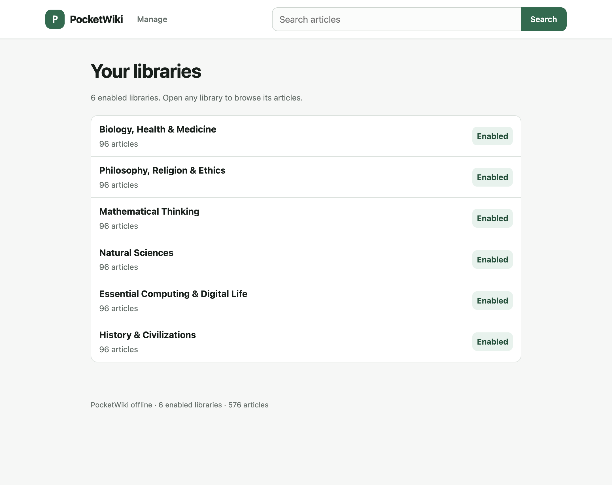
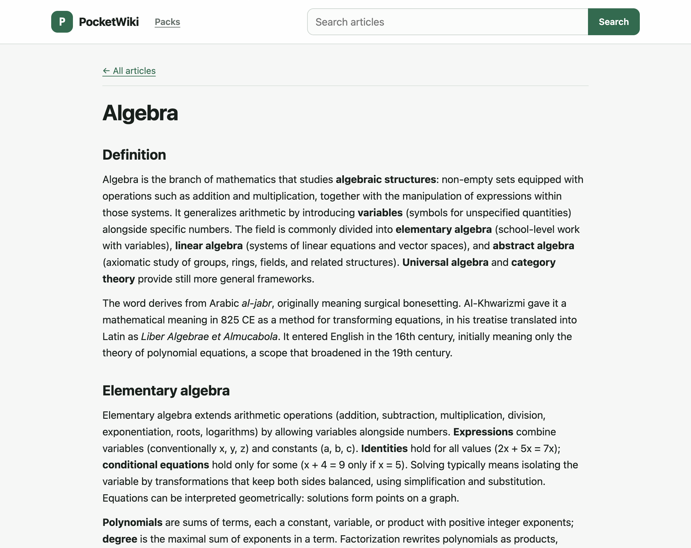
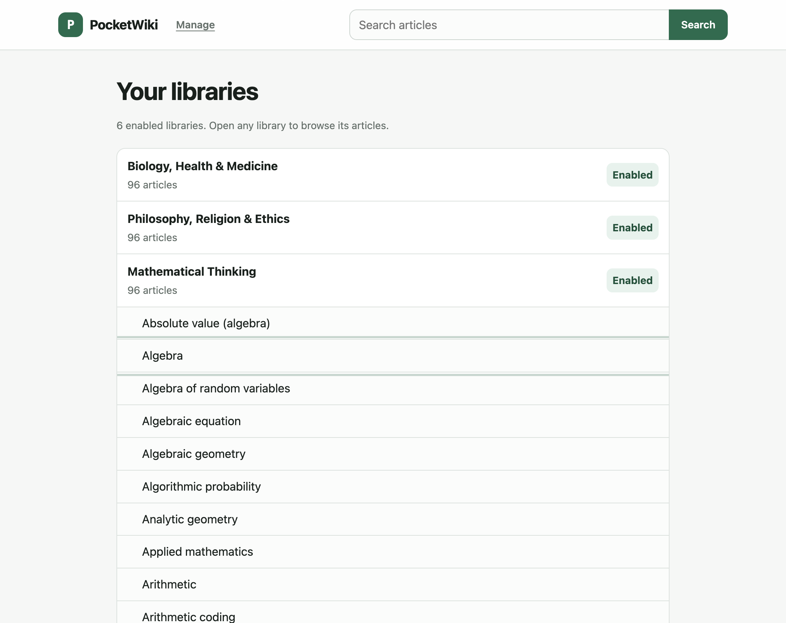
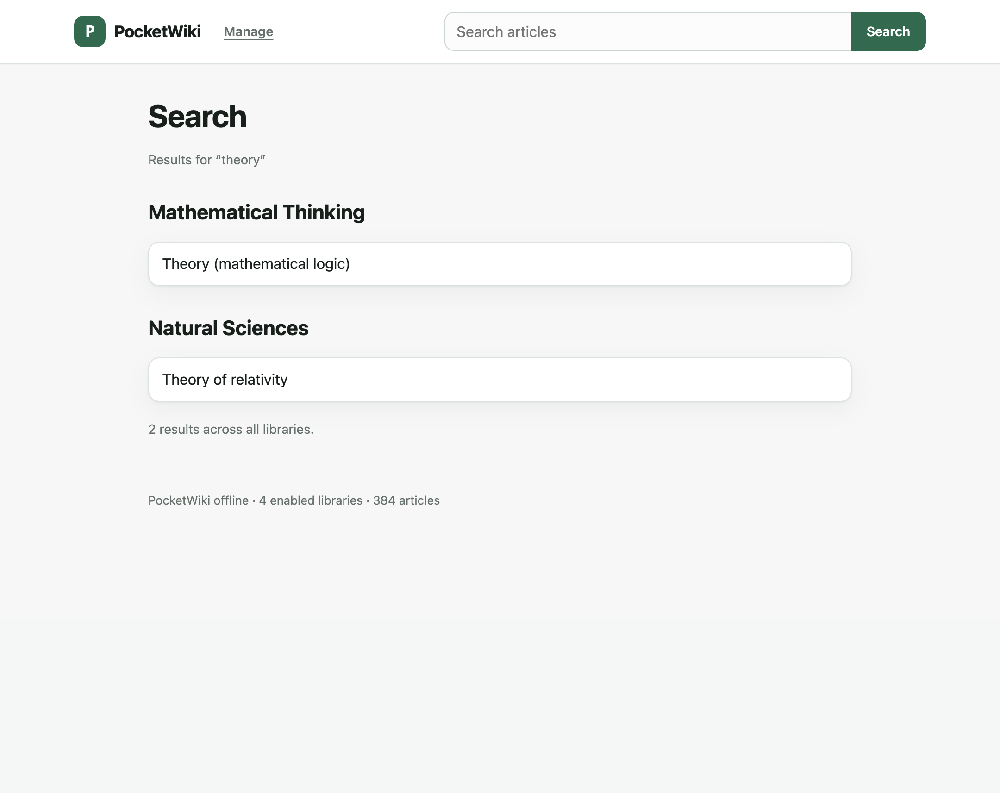
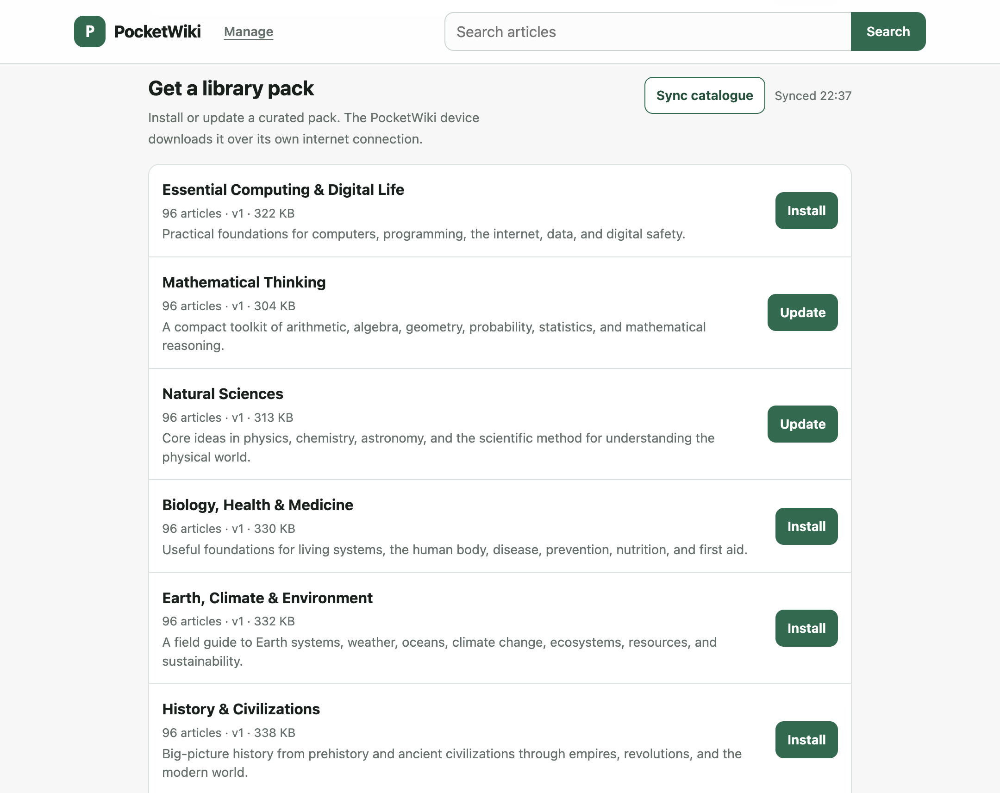
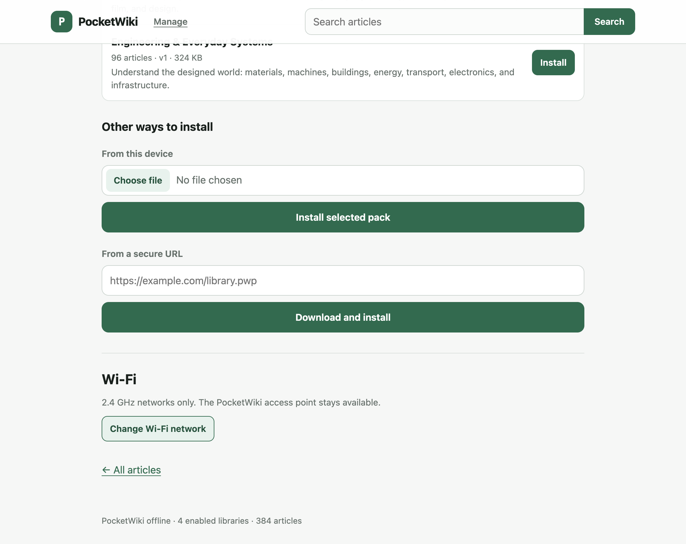

Flash it once
Plug the board into USB and flash it from this page, or run one script that writes the bootloader, partitions, firmware and the starter library. The Swift flasher does the same on a Mac.
Chrome, Edge, or PythonAn offline reference library on an ESP32 board. Plug it into USB, join its Wi-Fi, and read on any phone or laptop nearby. Start with the Biology, Health & Medicine library, then mix and match more packs as the catalogue grows.
100 articles, showing 1 to 3
PocketWiki offline · 100 articles
Results for “photo”
Biology starter · served from flash
Click any pack to browse its article titles, then choose your own combination. Install one, several, or all of them; every pack joins the same search and stays available offline.
Two things you already know how to do: plug in a cable, join a Wi-Fi network.
Plug the board into USB and flash it from this page, or run one script that writes the bootloader, partitions, firmware and the starter library. The Swift flasher does the same on a Mac.
Chrome, Edge, or PythonOpen the PocketWiki network, then 192.168.4.1. The access point starts open, so set a password in Manage before you share the board.
Start with the Biology, Health & Medicine library already on the board. Add more from the catalogue, an upload, or the Android app. Reading never needs a connection.
Offline after setupSearch, browse, read and manage packs from one place. Nothing to install, nothing to sign in to.

Installed collections appear the moment the board is running.

Articles come from the board over its own Wi-Fi.

A sorted title list scrolls as fast offline as on.

Search any title across the packs you have installed.

Install or update curated packs from the local manager.

Upload a pack, fetch one over HTTPS, or set Wi-Fi. All from the board.
A 4 MB ESP32-C3 is all you need to start reading. The 16 MB S3 holds the whole catalogue. The OLED is optional.
The board the firmware is written for. 1.5 MB of application, the built-in library, and room left over for packs.
The same firmware with a far larger store, so the whole catalogue can live on the board.
A status display for the board. Reading and management work the same without it.
Both images carry the bootloader, partition table, firmware and the built-in library, and write from offset 0. Pins and layouts are in the hardware notes.
Plug in an ESP32-C3 or ESP32-S3, pick the board, and the browser writes the bootloader, partition table, firmware and starter library over USB. Add your Wi-Fi once and the board joins it on its first boot.
2.4 GHz only. The details are written to the board's own configuration partition, never sent anywhere, so it is on your network as soon as it reboots. Leave both fields empty to set Wi-Fi later at 192.168.4.1/manage.
If the port picker stays empty, the USB cable may be charge-only or a serial monitor still holds the port. On a strict corporate machine, the desktop flasher does the same job.
What you need, what works offline, and what happens when a transfer fails.
No. The board makes its own Wi-Fi network and serves the library at 192.168.4.1. Reading works with no router and no connection. Joining a 2.4 GHz network only fetches optional packs and catalogue updates.
ESP32-C3 DevKitM-1 boards with 4 MB of flash, and ESP32-S3 DevKitC-1 boards with 16 MB. Both are 2.4 GHz Wi-Fi only, and the access point shares that radio with the station connection.
Yes. The flash panel writes the firmware over USB from Chrome or Edge on a desktop, and it can store your Wi-Fi details at the same time so the board is on your network the moment it reboots. Everything else needs no internet, no account and no driver beyond what the board's USB bridge requires.
No. It is an optional 128 × 64 SSD1306 panel over I2C that shows the reading address, library counts and transfer progress. Without one, the library and the web interface work unchanged.
Open /manage to install from the catalogue, upload a .pwp file, or fetch one from a secure URL. The Android app does the same over BLE, sending pack bytes over Wi-Fi when it can reach the board.
Uploads land in a temporary file and are renamed only after the board checks size, CRC, headers, offsets and index. Your previous pack stays in place, and the built-in library is never part of that write.
Yes. Give each article one h1 title, and the included tooling builds, verifies and wraps a deterministic pack from Markdown or safe HTML. Active content and remote resources are removed, internal links are rewritten, and the title index is sorted for lookup.
The 4 MB C3 layout keeps about 1.5 MB for firmware, 448 KB for the built-in library, 64 KB for its index and roughly 1.94 MB for installed packs. The 16 MB S3 leaves about 13.9 MB for packs. The store is FAT with wear levelling and an 8 KB reserve.
PocketWiki turns an ESP32-C3 or ESP32-S3 into a small offline library. The device creates its own Wi-Fi network and serves a searchable library at http://192.168.4.1/. It can also join a 2.4 GHz network to download packs. After setup, reading works without an account, phone, or internet connection.
firmware/ holds ESP-IDF firmware for ESP32-C3 and ESP32-S3 boards.android/ holds the Kotlin and Compose companion app.pocketwiki-content repository holds the article text: the built-in Biology, Health & Medicine pack and the sources for optional packs.tools/ holds the pack builder, local preview server, and flash script.docs/ holds the technical reference and development guide.You need Python 3.10 or later, PlatformIO or ESP-IDF 6, and a supported board.
# Run the host tests.
python3 -m pytest -q
# Build one firmware target.
pio run -d firmware -e esp32-c3
# Or: pio run -d firmware -e esp32-s3
# Flash the C3 build. Give --port when auto-detection cannot find the board.
python3 tools/flash_all.py --fw-dir firmware/dist/esp32-c3For an S3 board, use the matching staged build and partition table:
python3 tools/flash_all.py --port /dev/cu.usbmodemXXXX --chip esp32s3 \
--partitions firmware/dist/esp32-s3/partitions.csv \
--fw-dir firmware/dist/esp32-s3After the board starts, join the PocketWiki Wi-Fi network and open http://192.168.4.1/. The default network is open. Set a password before you use the device in a shared place.
flash_all.py writes the bootloader, partition table, firmware, and included library. Use it for the first flash and when the included library changes.
The browser flasher below reads the current verified image manifest from R2 and downloads the matching bootloader, partition table, firmware, and starter library directly over HTTPS. The manifest is updated atomically, while each image is immutable.
curl -fsS https://packs.educated.space/firmware/index.jsonEach input article must have one h1 title. Build, check, and wrap the pack:
python3 tools/pack_content.py build /path/to/articles build/my-pack --codec gzip
python3 tools/pack_content.py verify build/my-pack
python3 tools/pack_content.py pack-file build/my-pack my-pack.pwpGzip is recommended for the C3 because it has predictable memory use. The packer defaults to zstd when --codec is omitted, and firmware reads both codecs. The packer removes active content and remote resources, rewrites accepted internal links, and builds a sorted title index. The device checks a pack before it installs it.
Build the debug app with cd android && ./gradlew assembleDebug. The app guides you through Device, Wi-Fi, and Library. It uses BLE for setup and management; pack bytes travel over Wi-Fi when possible and fall back to BLE.
PocketWiki has a content pipeline, firmware, and optional companion clients.
Articles -> pack builder -> content.bin + index.bin -> ESP32 flash
-> local web reader
Phone or browser -> Wi-Fi or BLE -> validated .pwp -> internal pack storetools/pack_content.py reads Markdown or HTML in two passes. It first finds and normalizes titles, rejects duplicates, and assigns IDs. It then sanitizes the articles, rewrites accepted internal links, compresses each article, and writes a sorted fixed width index. New builds use gzip (--codec gzip) for predictable C3 memory use; firmware also reads v2 zstd packs. See the pack format for the byte layout.
app_main.c initializes NVS, the optional OLED, AP+STA Wi-Fi, the included archive, the pack store, BLE, and the HTTP server. A bad optional pack does not stop the device. A bad included archive still allows diagnostic routes to run.
content_archive.c validates and reads included and portable archives.pack_store.c manages the FAT based /packs filesystem and staged writes.title_lookup.c provides normalization with identical bytes and binary search.web_server.c serves reading, search, Wi-Fi, and pack management routes.wifi_ap.c manages the access point and saved station credentials.ble_provisioning.c provides setup and pack management over GATT.oled_display.c provides optional device status and transfer progress.| Route | Purpose |
|---|---|
GET / | Browse the included and installed libraries. |
GET /search?q= | Find exact and prefix title matches. |
GET /a/<id>?pack=<name> | Read an article. |
GET /download/<id>?pack=<name> | Download an article as HTML. |
GET /title/<title> | Resolve an exact title. |
GET /browse | Read a page of titles. |
GET /manage | Manage Wi-Fi and library packs. |
GET /packs | Compatibility redirect to /manage. |
GET /api/packs | Get installed-pack data. |
GET /api/packs/catalog | Get the local catalogue. |
POST /api/packs/catalog/sync | Refresh the catalogue through station Wi-Fi. |
POST /api/packs/install | Download and install a catalogue pack. |
POST /api/packs/upload | Upload a .pwp file. |
POST /api/packs/action | Remove a pack. |
GET /api/wifi/scan | Scan 2.4 GHz networks. |
GET /api/wifi/status | Get station and access-point status. |
POST /api/wifi/config | Save station credentials. |
GET /api/stats | Get device telemetry. |
GET /health | Check service health. |
The browser uploads packs over Wi-Fi. The Android app uses BLE for discovery and control, sends pack bytes over Wi-Fi when it can reach the device, and falls back to acknowledged BLE chunks when it cannot. Uploads write to a temporary file; the firmware checks size, CRC, headers, offsets, and index before renaming into /packs. The previous pack remains available when validation fails.
PocketWiki stores a library in content.bin and index.bin. The pack tool creates these files; firmware reads them from raw flash or from a .pwp file. All multi-byte values use little-endian byte order. Each article is compressed independently, so firmware can read one article without decompressing others.
content.bin starts with PWKC and has two supported versions.
| Version | Header size | Article codec | Dictionary |
|---|---|---|---|
| 1 | 16 bytes | gzip | none |
| 2 | 32 bytes | zstd | optional shared dictionary |
Use version 1 for new C3 friendly packs with --codec gzip. The packer defaults to version 2 when --codec is omitted. Firmware reads both versions.
| Offset | Size | Field |
|---|---|---|
| 0 | 4 | magic: PWKC |
| 4 | 1 | version: 1 |
| 5 | 3 | reserved: zero |
| 8 | 4 | header_size: 16 |
| 12 | 4 | payload_size |
| 16 | … | gzip article frames |
| Offset | Size | Field |
|---|---|---|
| 0 | 4 | magic: PWKC |
| 4 | 1 | version: 2 |
| 5 | 3 | reserved: zero |
| 8 | 4 | header_size: 32 |
| 12 | 4 | payload_size |
| 16 | 4 | dict_offset, relative to the payload |
| 20 | 4 | dict_len |
| 24 | 8 | reserved: zero |
| 32 | … | zstd article frames, then an optional dictionary |
For version 2 with a dictionary, dict_offset must equal payload_size - dict_len; the dictionary sits at the end of the payload. Without one, both values are zero.
index.bin starts with PWKI. Its 32 byte header describes a sequence of 40 byte article entries followed by UTF-8 title strings.
| Offset | Size | Field |
|---|---|---|
| 0 | 4 | magic: PWKI |
| 4 | 1 | version: 1 |
| 5 | 1 | entry_size: 40 |
| 6 | 2 | reserved: zero |
| 8 | 4 | article_count |
| 12 | 4 | entries_offset: 32 |
| 16 | 4 | strings_offset |
| 20 | 4 | index_size |
| 24 | 4 | CRC32 of bytes 32 through index_size |
| 28 | 4 | reserved: zero |
Each entry:
| Offset | Size | Field |
|---|---|---|
| 0 | 4 | id |
| 4 | 4 | content_offset, relative to the content payload |
| 8 | 4 | comp_len |
| 12 | 4 | uncomp_len |
| 16 | 4 | CRC32 of uncompressed article bytes |
| 20 | 4 | norm_off, absolute offset in index.bin |
| 24 | 2 | norm_len |
| 26 | 4 | disp_off, absolute offset in index.bin |
| 30 | 2 | disp_len |
| 32 | 8 | reserved: zero |
Entries are sorted by normalized title bytes. IDs are sequential and match the entry position. The firmware verifies bounds, order, IDs, and the index CRC.
Python and C must produce the same bytes. The algorithm works on UTF-8 bytes:
A through Z to lowercase.Do not add Unicode case folding. It would break cross language lookup parity.
A .pwp file wraps both archive files for upload.
| Offset | Size | Field |
|---|---|---|
| 0 | 4 | magic: PWKP |
| 4 | 1 | version: 1 |
| 5 | 3 | reserved: zero |
| 8 | 4 | content_len |
| 12 | 4 | index_len |
| 16 | 4 | CRC32 of content.bin + index.bin |
| 20 | 12 | reserved: zero |
| 32 | … | content.bin |
| … | … | index.bin |
The device checks the outer CRC and length, then validates both embedded files. It writes an upload to a temporary file and renames it only after validation.
python3 tools/pack_content.py build /path/to/articles build/pack --codec gzip
python3 tools/pack_content.py verify build/pack
python3 tools/pack_content.py pack-file build/pack pack.pwpUse partition-image only for the flash archive. .pwp files are for the internal pack store.
| Board | Flash | PlatformIO environment | Partition table |
|---|---|---|---|
| ESP32-C3 DevKitM-1 compatible | 4 MB | esp32-c3 | partitions.csv |
| ESP32-S3 DevKitC-1 compatible | 16 MB | esp32-s3 | partitions_16mb.csv |
Both chips support 2.4 GHz Wi-Fi only. In AP+STA mode, the access point and station share one radio and therefore one channel.
PocketWiki supports a 128 × 64 SSD1306 OLED over I2C.
| Signal | Default pin |
|---|---|
| SDA | GPIO1 |
| SCL | GPIO0 |
| I2C address | 0x3C, then 0x3D |
The display is optional. If the firmware cannot find it, the library and web server still work. When present, the OLED shows the reading address, library count, storage, and pack-transfer progress. On an ESP32-S3, GPIO0 is a boot strap pin: keep it high during reset. For a custom S3 board, GPIO1 for SDA and GPIO2 for SCL are safer. Do not use GPIO3 through GPIO10, GPIO19, GPIO20, GPIO43, GPIO44, or GPIO45 without first checking the board design and Espressif documentation.
The C3 layout reserves 1.5 MB for firmware, 448 KB for starter content, 64 KB for its index, and about 1.94 MB for installed packs. The S3 layout reserves 1.5 MB for firmware, 512 KB for content, 64 KB for its index, and about 13.9 MB for installed packs. The packs partition uses FAT with wear levelling, with an 8 KB reserve so a nearly full filesystem can still update metadata safely.
PocketWiki network.http://192.168.4.1/./manage to connect station Wi-Fi or install a pack.The default access point is open. Configure a WPA2 password before shared use.
Local workflow only: never commit generated firmware, archives, downloaded content, sdkconfig, or managed components. You need Python 3.10+, pytest, PlatformIO with espressif32@7.0.1 (or ESP-IDF 6.0.1), and Swift 5.10+ for the optional desktop flasher.
python3 -m pytest -qThe suite checks archive validation, deterministic pack output, sanitization, link rewriting, title normalization parity, and reference server routes.
PlatformIO prepares the stylesheet, catalogue, and starter gzip pack before each build, then stages flash ready files in firmware/dist/<environment>/.
# 4 MB ESP32-C3
pio run -d firmware -e esp32-c3
# 16 MB ESP32-S3
pio run -d firmware -e esp32-s3Or with ESP-IDF:
source ~/esp/esp-idf/export.sh
idf.py -C firmware set-target esp32c3 # Use esp32s3 for the S3.
idf.py -C firmware buildThe built-in archive is packed from articles/db-packs/biology-health/ in the pocketwiki-content checkout, found at ../pocketwiki-content unless POCKETWIKI_CONTENT_DIR says otherwise. To test a different source directory with ESP-IDF, pass a path: idf.py -C firmware -DPW_ARTICLES_DIR=/absolute/path/to/articles build.
Build first. The arguments must match the board and its partition table.
# ESP32-C3
python3 tools/flash_all.py --port /dev/ttyACM0 \
--fw-dir firmware/dist/esp32-c3
# ESP32-S3
python3 tools/flash_all.py --port /dev/cu.usbmodemXXXX --chip esp32s3 \
--partitions firmware/dist/esp32-s3/partitions.csv \
--fw-dir firmware/dist/esp32-s3The script checks that each image fits its partition before calling esptool. Use --no-firmware to write only content and index, or --no-content to write only bootloader, partition table, and application.
python3 tools/pack_content.py build ../pocketwiki-content/articles/db-packs/biology-health build/preview --codec gzip
python3 tools/reference_server.py build/preview --port 8080The reference server helps you check routes and layout. It does not model device memory, BLE, flash latency, or interrupted uploads.
python3 -m pytest -q.firmware/, CMake, Kconfig, or partitions.The public catalogue is https://packs.educated.space/index.json. It lists immutable .pwp files served by the PocketWiki Cloudflare Worker. The Android app ships a bundled fallback catalogue and refreshes the public one when the phone has internet; the /manage page can ask the device to refresh its own cached catalogue through station Wi-Fi. Before installation, Android checks the declared byte count and SHA-256. The device still performs its own size, CRC, header, and index checks.
packs/catalog-source.json in the pocketwiki-content checkout.id stable.version when its content changes.python3 tools/publish_pack_catalog.pyThe publisher builds and checks every archive, updates Android's fallback catalogue, uploads immutable pack objects, and uploads index.json last. That final upload makes the new release visible as one catalogue update. Use --deploy-worker only when the Worker code or configuration also changed. Run python3 -m pytest -q after you change the catalogue.
The curated pack directories live in the companion pocketwiki-content repository under articles/db-packs/. tools/export_distilled.py can export completed entries from a local wiki distill database and refresh the pack manifest there. Run the publisher after that export. Each pack's catalogue entry carries its CC BY-SA 4.0 license.
The flash panel writes the same images over USB with esptool-js and the Web Serial API. Use Chrome or Edge on a desktop; Firefox and Safari do not expose serial ports to a page. WebUSB is not usable here, because the operating system claims the ESP32-C3/S3 USB-serial peripheral with its own CDC driver.
The page reads the current https://packs.educated.space/firmware/index.json manifest from R2, checks every image against the byte count and SHA-256 recorded there, then writes it at the offset its partition table gives. When you supply Wi-Fi details it also builds and writes the nvs partition, which is the same pocketwiki namespace the device reads on boot.
# Build both boards, then stage the deployment copies.
pio run -d firmware -e esp32-c3
pio run -d firmware -e esp32-s3
python3 tools/stage_web_firmware.pyThe staging tool refuses to write a manifest when an image overflows its partition, so a layout change cannot produce a flash plan that silently fails to boot.
flasher/ provides a Swift command-line tool and a macOS app. They detect an ESP32, select the matching image layout, and use esptool to write the device. You need Swift 5.10+, esptool (via ESP-IDF, PlatformIO, or pip install esptool), and a firmware build staged in firmware/dist/esp32-c3/ or firmware/dist/esp32-s3/.
swift build --package-path flasher
swift test --package-path flasherOn macOS, start the app with swift run --package-path flasher ESPFlashGUI, or build an app bundle with flasher/scripts/bundle-macos.sh.
# ESP32-C3
flasher/.build/debug/espflasher flash \
--partitions firmware/dist/esp32-c3/partitions.csv \
--fw-dir firmware/dist/esp32-c3
# ESP32-S3
flasher/.build/debug/espflasher flash --port /dev/cu.usbmodemXXXX \
--partitions firmware/dist/esp32-s3/partitions.csv \
--fw-dir firmware/dist/esp32-s3The tool detects the chip and flash size, checks each image, writes the images, and asks esptool to verify. Useful commands: list, detect, and partitions --chip esp32c3 --flash-size 4MB. Use --app-only to keep existing partitions, --erase-all to erase flash first, and --out merged.bin to create a merged image.
PocketWiki source code is Apache-2.0 licensed (© 2026 Bilawal Riaz): use, modify, and distribute it, including commercially, provided the LICENSE and NOTICE files travel with it. It comes with an express patent grant and no warranty of any kind. Article text is not in this repository: it is adapted from Wikipedia and licensed CC BY-SA 4.0 in the companion pocketwiki-content repository, which records its attribution status.